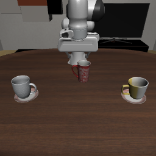
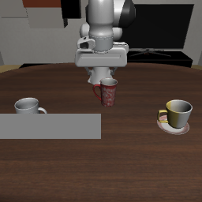
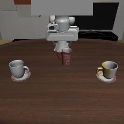

重复理解相似画面
物体和任务都没变时，反复运行语义模型可能浪费算力。
Task-Candidate Scoring for Budgeted Semantic Refresh
有限计算预算下的任务候选评分
不是每一帧，都值得重新运行昂贵的语义模型。

以“把杯子放到盘子上”为例：机器人既要跟上当前画面，也要知道任务进行到哪一步。
物体和任务都没变时，反复运行语义模型可能浪费算力。
杯子移动或任务阶段改变后，旧判断可能不再适用。
背景或光照变了，不一定需要重新判断任务关系。
慢模型低频更新理解，快策略使用缓存生成动作。
Acting While Understanding：当前采用固定语义刷新日程。
执行已有动作时，准备下一段动作，减少停顿。
SmolVLA：异步执行栈。RTC：处理延迟下的动作接续。
根据动作置信度、表征稳定性、运动等信号决定重算。
Gated VLA-Cache、ElegantVLA 等已有直接先例。
社区 jev-visual 展示了共享上下文的候选评分：比较预定义答案，而非先生成一段自由文本。
调研发现快慢分支、缓存和调度已有先例，于是把贡献收窄到“候选信息的额外价值”。
把缓存候选分布与当前轻量视觉、缓存年龄结合，预测旧判断是否已不适用。
候选分数只来自上次语义计算；不能先运行完整模型，再决定要不要刷新。
快分支持续看当前画面；慢分支隔一段时间更新任务语义。
轻量视觉反馈
使用当前视觉与缓存语义
更新缓存语义与候选分布
候选分布 + 视觉变化 + 缓存年龄
候选分布只进入刷新器；主实验固定动作策略。刷新器发出请求后，慢分支才更新。
已审阅 19 项相关来源：计划内 14 项，补充 5 项，含论文与仓库。
动作分块与 flow、低频语义更新、动态调度，都不能单独作为本项目创新。
代表性线索：SmolVLA、RTC，以及相关缓存与调度工作。
在同一动作策略、同一执行器与相近总计算成本下，比较刷新决策。
强对照包括：视觉变化、缓存年龄、运动信息，以及缓存特征。
SmolVLM2-500M
BF16 · RTX 5090
完成本地推理验证。
普通生成、约束生成
独立评分、共享评分
后续进行同骨干质量与成本比较。
task-0：3 个 seed
每个重复运行 2 次
345 个数组逐一比较，差异为 0；仅说明构造复现。
官方 Jev：已核查文本 API 文档，尚未完成认证推理。社区 jev-visual：提供接口启发。本地实验：使用 SmolVLM2。
最快结构化路径：约束生成，端到端 p50
优化后，这次诊断仍主要耗在前处理与主机端；并非模型计算主导。


开发取景视场：45° → 60°；局部覆盖仅占画面 6.25%。
两名审核者
候选答案与逐条判断均一致
五类参考答案均有覆盖：A / B / C / D / E = 3 / 2 / 3 / 2 / 2。E 表示输入不足以判断。
对照区域发生变化时，这批人工样本仍可判断。刷新器需要识别与任务有关的变化。
人工观察 + 待验证的调度假设如果关键区域仍被挡住，再运行一次慢模型可能依旧无解。需要实测“刷新后是否改善动作”。
待闭环验证4×4 图片的生成与绑定都正确，但任务信息被毁掉。研究意义必须先于类别覆盖。
已发生的设计教训完成已预注册的审核资格考核，再进行正式标注。
确认候选任务可解，并完成可信的接口比较。
对照周期、视觉变化、学习型与候选评分门控。
真正要证明的是：
同样预算，把理解用在更有用的时刻。